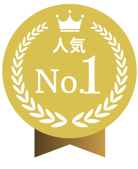
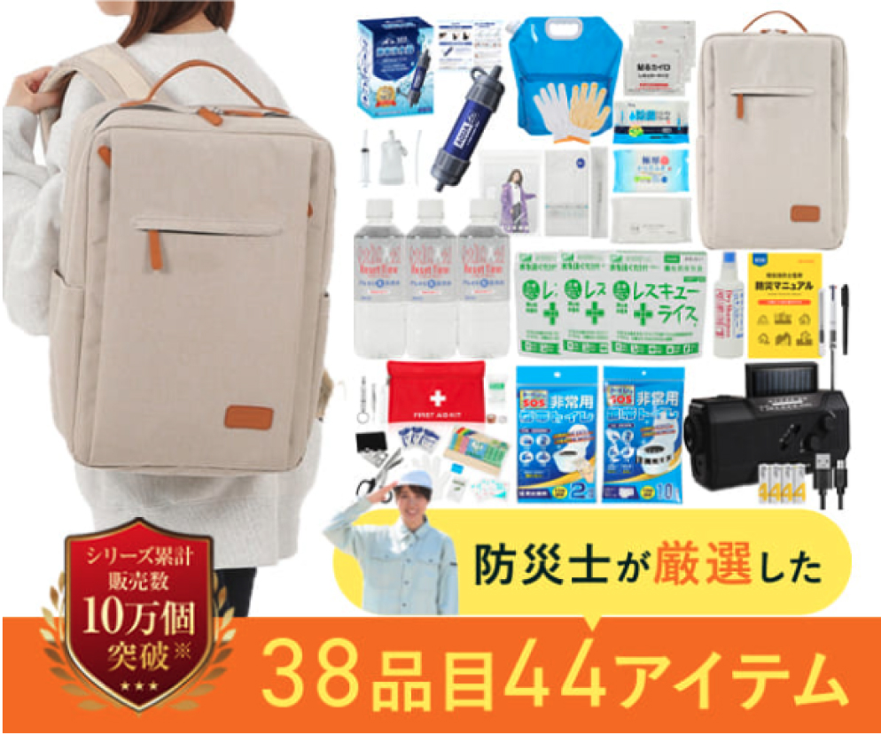
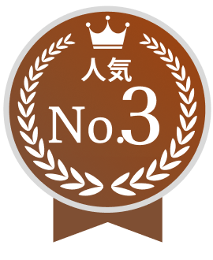
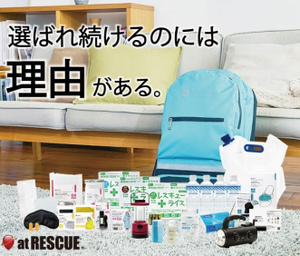
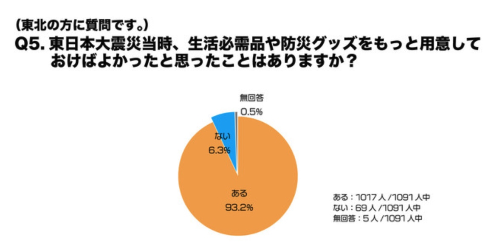
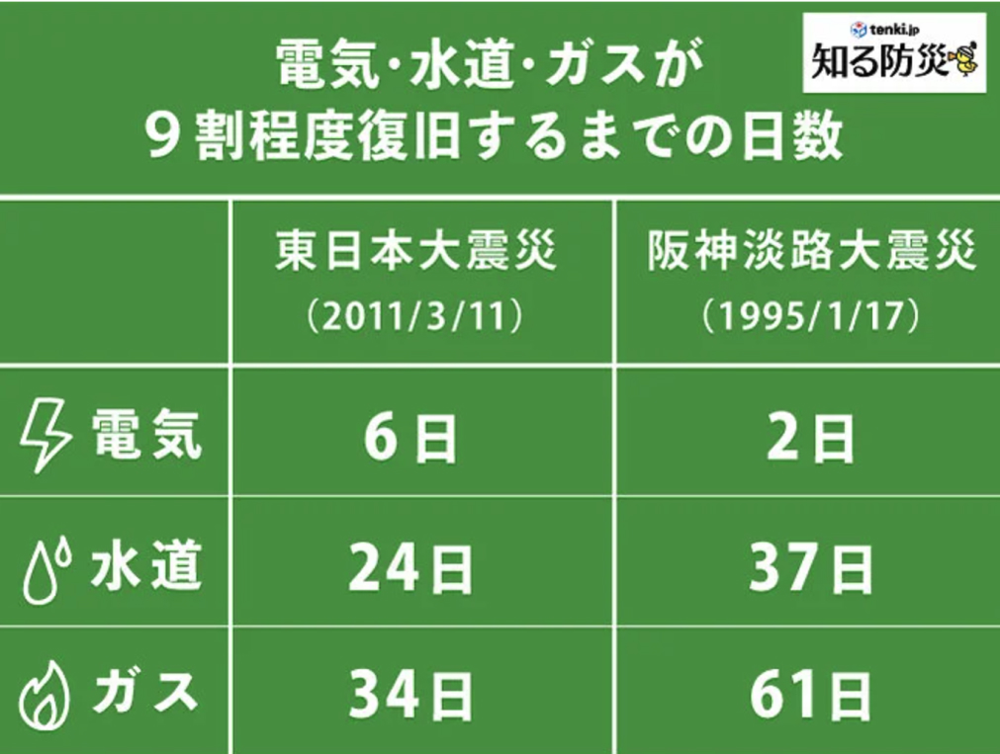
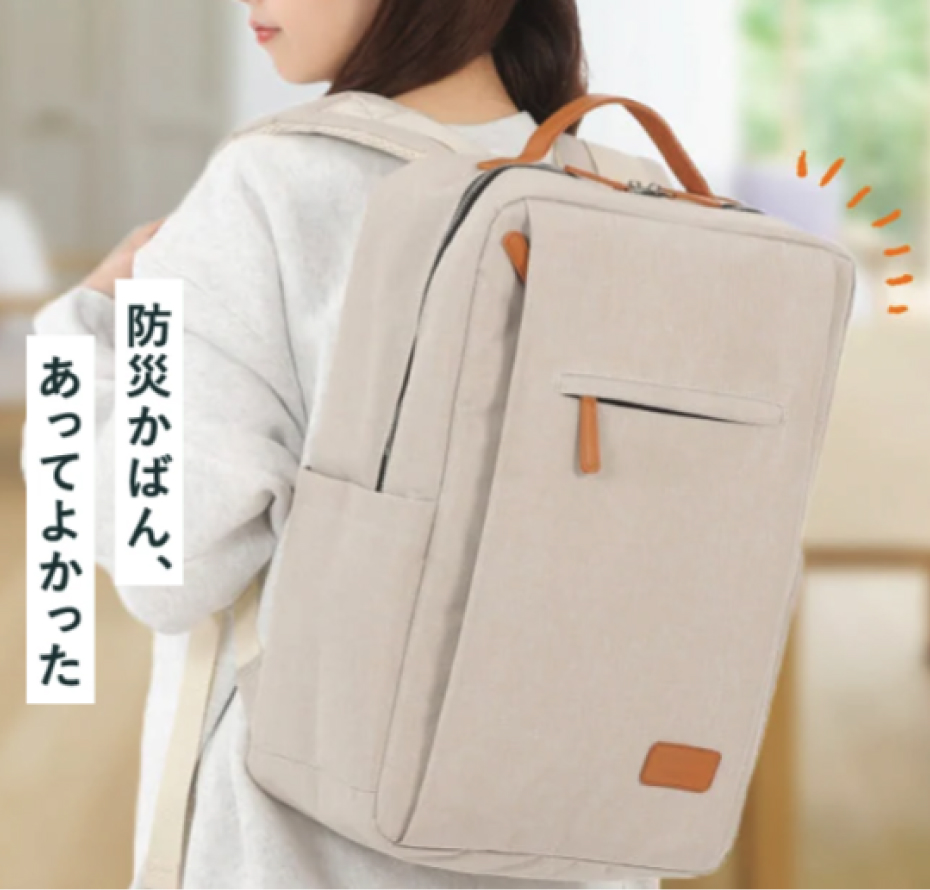
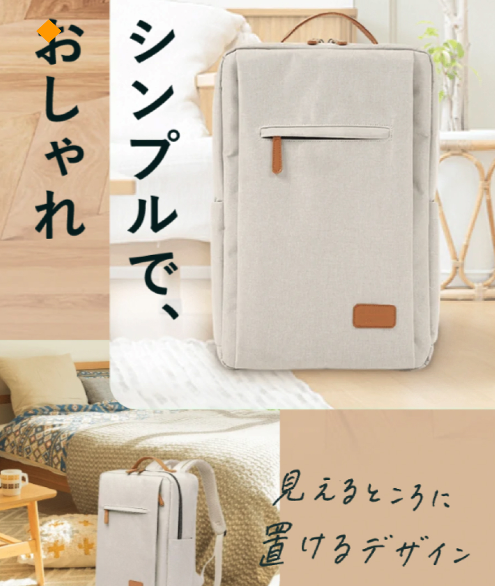

＼ 震災経験者が選ぶ ／

防災セットは、いざという時に
必要なものが、すべて入っている
ことが重要です。
おすすめはこの３つ！
防災セットを選ぶ
3つの基準
せっかく防災セットを用意していても、
いざ被災した時に「必要なものがない...」
ってなると意味がないですよね。
POINT.1
避難生活に必要な
アイテムが揃っている
POINT.2
”丸3日分”の
量がある
大きな災害が発生した場合、ライフラインが
回復するのは4日目以降だと言われています。
水や非常食はもちろん、携帯トイレウェット
ティッシュなどの衛生用品も、かならず3日分
以上入っているものを選びましょう。
POINT.3
防災の専門家が
監修している
防災の専門家である防災士や消防士が監修し
ている防災セットを選ぶのも重要なポイント
です。
現場での経験や被災者の声をもとに作られて
いる防災セットなら、アイテムの品質や量も
十分。自宅に置いておくだけで、安心して備
えていられるでしょう。
被災経験者が選ぶ
防災セット
おすすめランキング


筆者イチオシ！
あかまる防災
5
あかまる防災の
ココがおすすめ！
震災を経験した防災士と消防士がつくった、生き延びるための十分な備え
がある防災セットです。
現場の声をもとに厳選した38種44個の
アイテムが入っているので、はじめての
防災セットとしてもオススメです。
USER VOICE
口コミ
30代 男性
東日本大震災を経験した防災士さんが
本当に必要なものを厳選しているので、
「あのとき準備しておけば」
が無くなるのが良いと思います。
ライト付きのラジオや携帯浄水器といった
他の防災セットにはついていないものが
入っていたのもよかったです。
27歳 女性
とにかく中身がかなり充実していて、
「これさえあれば何とかなりそう」
という安心感があります。
同じ価格帯のなかで一番アイテム数が多
かったのが決め手になりました。
34歳 女性
小さい子どもがいるんですが、何かあったときにこれをもって逃げればいいという安心感があります。
女性でも背負って走れるくらいの
重さなので、ママにもおすすめしたい
です。
料金19,800円

Relief2
4.2
Relief2の
ココがおすすめ！
3日間生き延びるのための必要最低限の
アイテムが揃っています。
リュックのサイズが大きく、自分に必
要なアイテムを追加で入れられるのがポ
イントです。
携帯浄水器やと冬の被災に必須のカイロなど、
多くのアイテムを買い足す必要があります
USER VOICE
 口コミ
口コミ
39歳 男性
持っているのと持っていないのでは
気持ちの余裕が全然違います。
口コミ評価が非常に高かったので、
ここなら大丈夫だろうという思いが
あり購入を決めました。
51歳 女性
幸いなことに災害で使ったことは
ありませんが、コロナに罹って外に
出られない時に役立ちました。
家に置いてるだけで安心感があります
35歳 男性
台風の時の停電が起きたんですが、
準備していたおかげで家族全員が安心して
過ごすことができ、精神的にも落ち着きました。
市販の防災セットには入ってない
ラジオが入っていたのが、個人的に嬉し
かったです。
料金14,800円


アットレスキュー
3.9
アットレスキューの
ココがおすすめ！
防災メーカーと防災士が共同開発した
アットレスキューシリーズは、機能性に
優れたリュックが特徴。
テントで使われる防水性の高い生地を
使っているため、雨天時でも安心です。
USER VOICE
 口コミ
口コミ

37歳 女性
まだ本格的に役に立ったことは
ありませんが、あるだけで心に余裕が
できたと思います。
44歳 男性
アウトドア・旅行用でも使えそうだと
思い、購入しました。
車の中に置いとくだけでも安心感が違う
ので、買って良かったと思います。
料金19,800円

「ちゃんと準備しておけば..」
被災者の9割以上が準備不足で
後悔している現実

東日本大震災が起きたとき、
十分な量の防災グッズを用意しておらず、
9割以上の被災者が後悔したと回答してます。
被災経験者の

では、震災時にはどんなものが必要になるのでしょうか？
被災者の方のリアルな声をまとめてみました。
2週間泥水生活。
浄水器を用意しておけば...
34歳男性｜福島県｜東日本大震災で被災｜
立ってられないくらいの地震が数分続き、
直後に水道が止まりました。
蛇口からは茶色い泥水しか出ない状態が
2週間以上続き、浄水器を用意しておけば..
と思いました。
スーパーは品切れ続出、
食料難に...
21歳女性｜岩手県｜東日本大震災で被災｜
しばらく揺れが落ち着いた後、
車でスーパーに買い出しに行きましたが
全て買いつくされていました。
必要な時に必要なものを買えるとは限らない
ので、電気が無くても食べられるものの準備
はしておくべきだと思いました。
家中モノが散乱。
救急セットは必須です
37歳女性｜富山県｜能登半島地震で被災
棚が倒れて食器が落ちて床にモノが散し、
家中足の踏み場がありませんでした。
そこを子どもが素足で歩いてしまい、
甲の部分を何かの破片で切ってしまい、
ケガをしてしまいました。
とくに子どもや高齢者がいる家庭は、応急
処置ができる救急セットはあった方が良い
と思います。
1週間の車中泊。
防災セットの重要性を実感
しました
56歳男性｜熊本県｜熊本地震で被災
数百回の余震のあとに本震が来て家が半壊
し、1週間ほど車中泊をしていました。
それまでは熊本は地震が来ない地域と
されていたので 防災セットなどは用意して
いませんでした。
被災して避難生活をして初めて
防災セットの重要性がわかりました。
被災時はパニックで何を買えばいいかわからなく
なったり、そもそも品切れで買えなかったりすることも。
南海トラフ巨大地震は
30年以内に
70%以上の確率で発生..!?
「防災セットが大事なのはわかるけど、高いよ...」
「まだ買わなくてもいいかな...」
って思っている方もいると思います。
でも
南海トラフ地震は、
明日起きる可能性だってあるんです。
引用：政府自身調査研究推進本部
また地震によって、津波が起きれば
ライフラインが止まり、備えがなれば
生き延びれない可能性も..

引用：tenki.jp
日本全国のインフラに影響があると言われて
いる南海トラフ地震は復旧までにさらに時間が
かかるかもしれません。
だからこそ、事前に十分な備えをしておくことが大切なんです。
あかまる防災は、東日本大震災で
被災を経験した防災士が
自分の経験や現場の声をもとに
単品で揃えるより...
実は1万円以上もおトク！
あかまる防災のリュックなら
置き場所にも困らない！
また、あかまる防災は
「防災セットって、大きくて邪魔にならない？」
「余裕がある今だからこそ、リュックは
おしゃれなものにしたいなぁ」
という方にもおすすめです！

🔶あかまる防災のリュックは、たくさんの
アイテムが入っているにも関わらず、
コンパクトなつくりになっています。

🔶収納スペースがない場合は
リビングやベッドサイドに置いても◎
必要なものが
すべて入ってる！
はじめての防災セットなら、
おすすめは『あかまる防災』
 東日本大震災を経験した防災士が監修
東日本大震災を経験した防災士が監修- アイテム数は充実の38種類
 10年間の交換保証付き
10年間の交換保証付き
POINT
19,800円